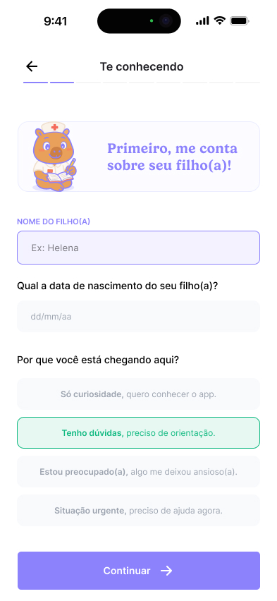
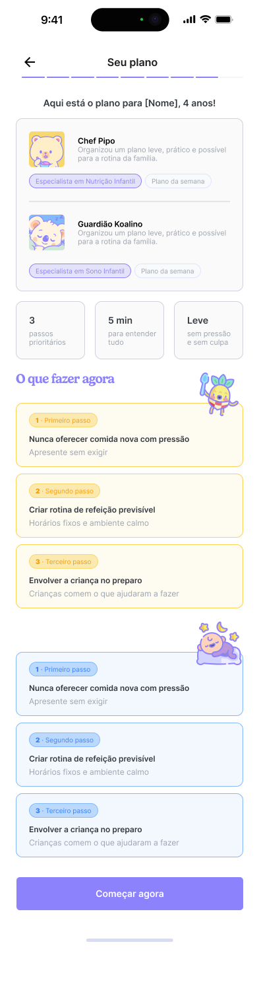
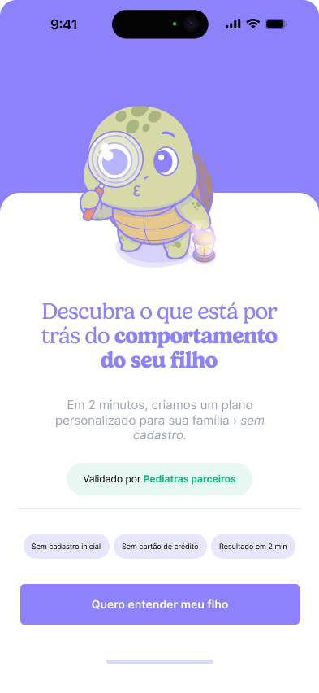

Onboarding que entrega valor antes de pedir cadastro.
Redesenho do fluxo de onboarding da Kidzenith para acolher famílias, reduzir fricção e acelerar o primeiro momento de valor. A proposta combina UX Writing, Motion com IA, UX Design, UI Design e prototipação com Claude.



O fluxo precisava atender melhor o usuário e o objetivo do cliente.
O desafio era reduzir abandono sem empobrecer a experiência. O onboarding anterior explicava muito antes de entregar valor, tinha mais etapas do que o necessário e criava fricção antes do usuário entender o benefício do produto.
Antes
- Paredes de texto e explicações longas no início da jornada.
- Valor percebido aparecendo tarde demais.
- Cadastro com alta fricção antes da recompensa.
- Ritmo mais longo, com maior risco de abandono.
Depois
- Perguntas rápidas, progressivas e de baixa fricção.
- Insight emocional antes do cadastro.
- Cadastro depois do desejo pelo plano estar formado.
- Fluxo mais curto, claro e orientado à conversão.
Uma jornada desenhada para criar confiança antes da conversão.
A solução reorganiza a narrativa em cinco momentos: entrada emocional, engajamento rápido, primeiro insight, tensão de conversão e recompensa final. Cada etapa tem uma função psicológica clara.
Entrada emocional
Hook direto na dor dos pais, com promessa clara e sem cadastro inicial.
Microcompromissos
Perguntas por toque, reduzindo esforço e mantendo sensação de avanço.
Aha Moment
Primeiro insight antes do cadastro, validando a dor da família.
Cadastro com desejo formado
Plano bloqueado cria curiosidade sem interromper cedo demais.
Recompensa final
Plano personalizado com ações simples, úteis e imediatas.
Decisões apoiadas em comportamento, clareza e ritmo.
Efeito Zeigarnik
Progressão visível para incentivar conclusão da jornada.
Breadcrumb
Perguntas fáceis primeiro, com comprometimento gradual.
Aha Moment
Valor percebido antes do cadastro para reduzir resistência.
Prova social
Normalização da preocupação para diminuir culpa e isolamento.
Curiosidade
Plano bloqueado como recurso de tensão e continuidade.
Personalização
Uso do nome da criança para reforçar relevância.
Baixa fricção
Sem cadastro antes do valor e login social como caminho principal.
Uma galeria interativa do fluxo redesenhado.
As telas foram organizadas em um mockup central para valorizar o fluxo sem perder qualidade dos arquivos. Use as setas para navegar entre os principais momentos da experiência.

Hook emocional
A primeira tela cria contexto, reduz objeções e apresenta a promessa de valor sem exigir cadastro.
Movimento como microfeedback, não como decoração.
O motion foi pensado para sustentar expectativa, suavizar transições e deixar o fluxo mais acolhedor. Com apoio de IA, as telas e personagens podem ganhar microinterações que reforçam o estado emocional de cada etapa.
Loading com intenção
Os carregamentos foram tratados como momentos de antecipação: curtos, úteis e conectados ao que está sendo analisado.
Personagens no momento certo
Os mascotes não aparecem como propaganda. Eles entram para apoiar a narrativa, acolher e reforçar o valor do plano.
Um onboarding mais curto, mais humano e mais útil para famílias.
O redesenho transforma o primeiro contato com a Kidzenith em uma experiência de acolhimento e descoberta. A conversão deixa de depender de pressão e passa a nascer de clareza, valor percebido e confiança.